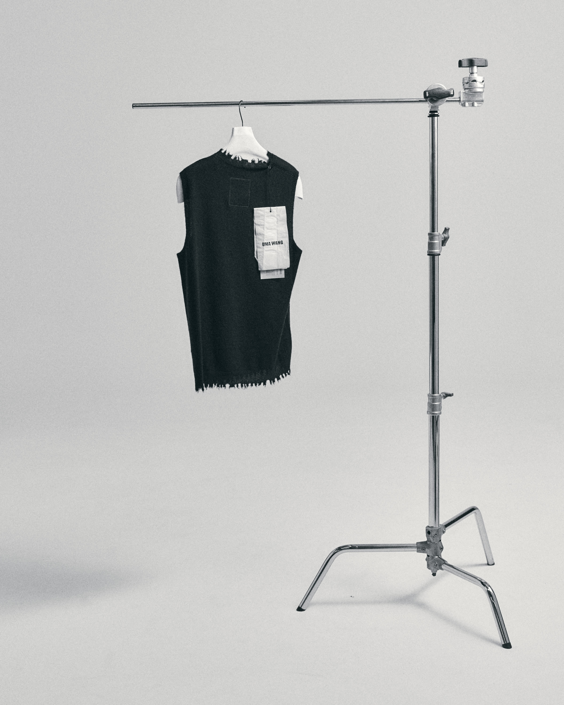
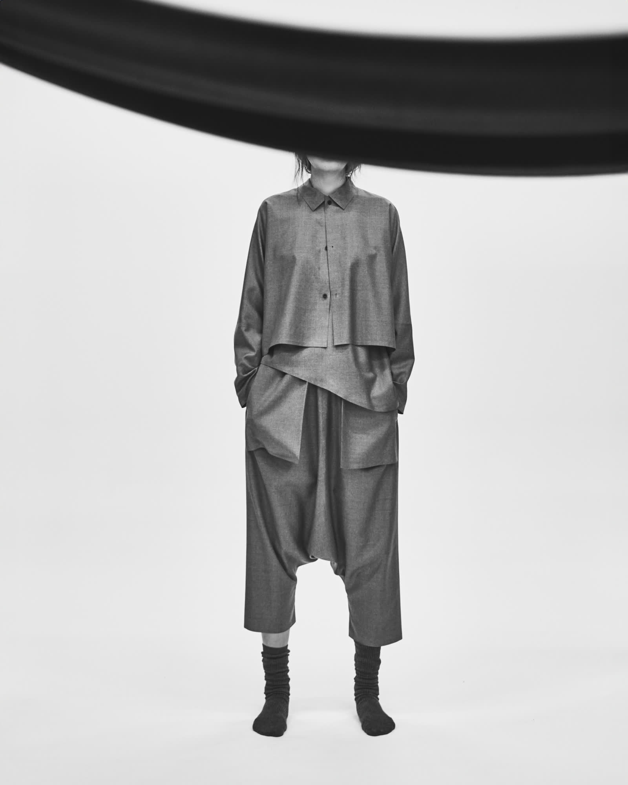

Brands
Arrivals
Exclusive
Paper
Store
Log In
Bag (
0
)


New Arrival
Online Exclusive
tOM Paper
tOM Paper — Store
tOM Paper — Brand
tOM Paper — Process
Selected Brands
Tom Atelier
Biek Verstappen
Giovanni Cavagna
Nostrasantissima
Uma Wang
Tagliovivo
Ziggy Chen
All Brands
Hannam, Seoul — Since 1997
Store
한남대로20길 33
hello@tom-hannam.com
Newsletter
새로 들어온 것을 먼저 보내드립니다.
구독